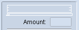

This shows which material is selected and how many plates are loaded in the tray.

|
|
After you click this button, the cover is unlocked after a number of internal sequences. |
|
|
The tray can have the following states:

This appears when the amount set in the "Material" tab is reached.

The tray is loaded but its status (full, almost empty, empty) is not yet checked.

The number of plates in the tray can be entered in this box. The counter decrements each time a plate is being exposed.

When a tray is loaded, you must create the link between the tray and the material and enter the number of plates in the tray. The settings are saved when you click "Apply".
No further operation is necessary if the same material is requested again.
If material that is not in the tray is requested, you must swap this tray for one with the correct material. When the new tray is loaded, you must enter the number of plates in the tray in "Amount". The link between the tray and the new material is created automatically.

The number of plates entered is to help the user check how many plates were already imaged.

The link between the manual material shaft and the material is created automatically when material is requested by the RIP. The appropriate plate must be placed in the material shaft manually. The link is cleared when the plate is drawn into the unit.
The settings for the active material are sent to the recorder and activated when you click "Apply".
Your last inputs are undone by clicking "Reset" unless the "Apply" button was clicked.
Click "Edit..." to open "Material Wizard (2)". This is where you can enter new materials or change the parameters of existing materials. "Material Wizard (2)" also displays when you double-click a row in the table.
Clicking "Link" or "Unlink" creates or clears the link between the material and the material shaft or tray. Link/Unlink
Clicking "Link" or "Unlink" creates or clears the link between the material and the material shaft or cassette tray.
Copyright © 2016 Heidelberger Druckmaschinen AG